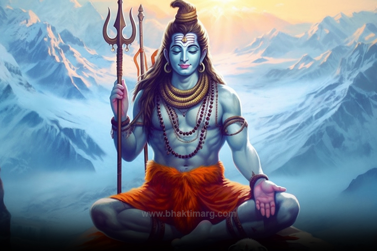

Hinduism, Oldest of the world’s major religions. It evolved from the Vedic religion of ancient India. The major branches of Hinduism are Vaishnavism and Shaivism, each of which includes many different sects. Though the various sects each rely on their own set of scriptures, they all revere the ancient Vedas, which were likely composed about the mid-2nd millennium BCE. The philosophical Vedic texts called the Upanishads explored the search for knowledge that would allow humankind to escape the cycle of reincarnation. Fundamental to Hinduism is the belief in a cosmic principle of ultimate reality called brahman and its identity with the individual soul, or atman. All creatures go through a cycle of rebirth, or samsara, which can be broken only by spiritual self-realization, after which liberation, or moksha, is attained. The principle of karma determines a being’s status within the cycle of rebirth. The Hindu deities having the widest following are Vishnu and Shiva, who are worshipped in various avatars, or incarnations. The goddess Durga also has a wide following. The major sources of classical stories about the gods are the Mahabharata (which includes the Bhagavadgita, one of the most important religious texts of Hinduism), the Ramayana, and the Puranas. Historically, the hierarchical social structure of the caste system was also important in Hinduism. In the 20th century Hinduism blended with Indian nationalism to become a powerful political force in Indian politics. In the early 21st century there were more than 850 million Hindus worldwide.
Shiva is represented in a variety of forms: in a pacific mood with his consort Parvati and son Skanda, as the cosmic dancer (Nataraja), as a naked ascetic, as a mendicant beggar, as a yogi, as a Dalit (formerly called untouchable) accompanied by a dog (Bhairava), and as the androgynous union of Shiva and his consort in one body, half-male and half-female (Ardhanarishvara). He is both the great ascetic and the master of fertility, and he is the master of both poison and medicine, through his ambivalent power over snakes. As Lord of Cattle (Pashupata), he is the benevolent herdsman—or, at times, the merciless slaughterer of the “beasts” that are the human souls in his care. Although some of the combinations of roles may be explained by Shiva’s identification with earlier mythological figures, they arise primarily from a tendency in Hinduism to see complementary qualities in a single ambiguous figure.Shiva’s female consort is known under various manifestations as Uma, Sati, Parvati, Durga, and Kali; Shiva is also sometimes paired with Shakti, the embodiment of power. The divine couple, together with their sons—Skanda and the elephant-headed Ganesha—are said to dwell on Mount Kailasa in the Himalayas. The six-headed Skanda is said to have been born of Shiva’s seed, which was shed in the mouth of the god of fire, Agni, and transferred first to the river Ganges and then to six of the stars in the constellation of the Pleiades. According to another well-known myth, Ganesha was born when Parvati created him out of the dirt she rubbed off during a bath, and he received his elephant head from Shiva, who was responsible for beheading him. Shiva’s vehicle in the world, his vahana, is the bull Nandi; a sculpture of Nandi sits opposite the main sanctuary of many Shiva temples. In temples and in private shrines, Shiva is also worshipped in the form of the lingam, a cylindrical votary object that is often embedded in a yoni, or spouted dish. Shiva is usually depicted in painting and sculpture as white (from the ashes of corpses that are smeared on his body) with a blue neck (from holding in his throat the poison that emerged at the churning of the cosmic ocean, which threatened to destroy the world), his hair arranged in a coil of matted locks (jatamakuta) and adorned with the crescent moon and the Ganges (according to legend, he brought the Ganges River to earth from the sky, where she is the Milky Way, by allowing the river to trickle through his hair, thus breaking her fall). Shiva has three eyes, the third eye bestowing inward vision but capable of burning destruction when focused outward. He wears a garland of skulls and a serpent around his neck and carries in his two (sometimes four) hands a deerskin, a trident, a small hand drum, or a club with a skull at the end. That skull identifies Shiva as a Kapalika (“Skull-Bearer”) and refers to a time when he cut off the fifth head of Brahma. The head stuck to his hand until he reached Varanasi (now in Uttar Pradesh, India), a city sacred to Shiva. It then fell away, and a shrine for the cleansing of all sins, known as Kapala-mochana (“The Releasing of the Skull”), was later established in the place where it landed.